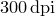

The remaining terminals listed in Table 2.1 direct graphical output to disk in a selection of rasterised and vector graphics formats. The filename of the resulting image file may be set using the set output command, as in the example:
set output 'my_plot.eps'
Use of rasterised image formats inevitably results in some loss of image quality since the plot has to be rasterised into a bitmapped graphic image. By default, this rasterisation is performed at a resolution of , though this may be changed using the set terminal dpi command, which should be followed by a numerical value. Alternatively, the resolution may be changed using the DPI option in the settings section of a configuration file (see Chapter 8).